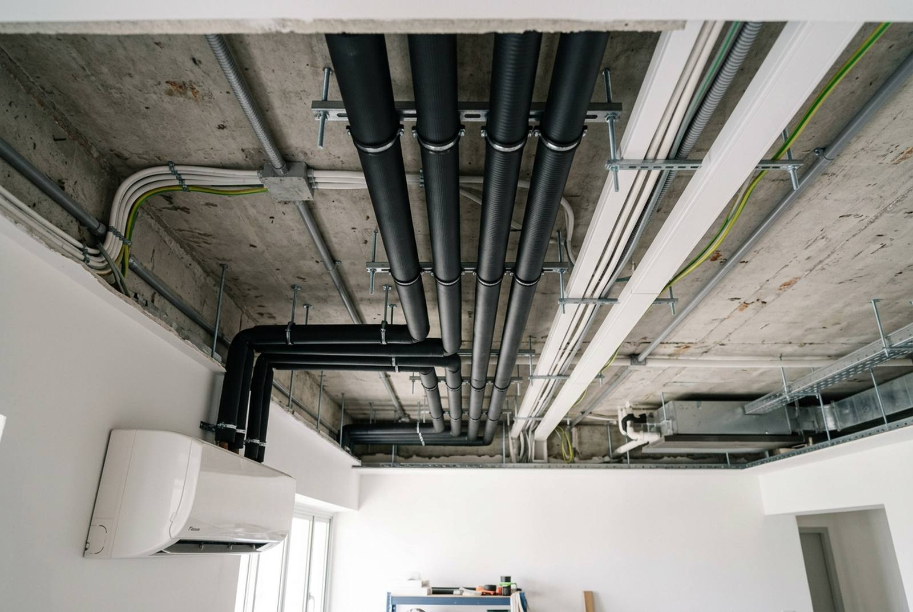

Aircon piping replacement and installation cost in Singapore

Refrigerant piping is the part of an air-conditioning system nobody thinks about until it starts costing money, usually as a gas top-up every few months that never quite fixes anything. New copper piping with insulation and trunking runs roughly S$350 to S$600 per set in Singapore, a condensate drain pump about S$200 to S$350, and relocating a fan coil unit S$250 to S$600 depending on how far it moves. Below: when piping genuinely has to be replaced rather than reused, what a proper installation includes, and the figures from a real August 2026 job.
When piping has to be replaced, not reused
Reusing existing pipework is normal and often correct. These are the situations where it is not.
You are moving from R22 to R32 or R410A
This is the big one, and it is the reason a lot of "new" aircon installations leak within a year.
Older systems ran on R22 refrigerant with mineral oil circulating through the pipework. Current systems run R32 or R410A with POE (polyol ester) oil. The two oils do not mix. Residual mineral oil left clinging to the inside of old pipe walls does not dissolve into POE; it collects, and it ends up restricting the capillary or expansion valve and eventually reaching the new compressor.
On top of that, R410A operates at meaningfully higher pressure than R22, so older thin-wall pipe runs may not be rated for the system now attached to them.
If a contractor is fitting new R32 units to your existing R22 pipework without discussing this, that is the question to ask before anything else. Sometimes a thorough flush is acceptable. Often, replacing the pipe is the cheaper answer over five years.
The insulation has gone
Closed-cell insulation hardens, cracks and pulls back at the joints, especially in a ceiling void. Bare copper in Singapore's humidity sweats, and that condensation lands on a false ceiling as a brown stain that everyone assumes is a roof leak. If you can see gaps in the lagging, or the pipe is wet to the touch when the system is running, the insulation has failed.
You have had more than one gas leak on the same system
A single leak is a repair. A second leak on the same run usually means the pipework itself is the problem: work-hardened flares, joints that have been opened and remade several times, or a run that was never brazed under nitrogen and is corroded from the inside. Topping up gas into a leaking system is money poured into the ceiling, and it is not good practice environmentally either.
The system is being moved
Shifting a fan coil to another wall means a new route regardless. Extending an existing run rather than replacing it introduces extra joints, and every joint is a potential leak.
Aircon piping and installation cost in Singapore (2026)
| Job | Indicative price (SGD) | Notes |
|---|---|---|
| New copper piping, insulation and trunking, per set | $350 – $600 | Existing route, standard run. Recent RK E&C job: 3 sets for $1,320 including one unit shift, about $440 a set |
| Additional run length, per metre beyond standard | $30 – $60 | Copper, insulation and trunking together |
| Relocating a fan coil unit | $250 – $600 | New route, bracket, patching and making good the old position |
| Condensate drain pump, supply and install | $200 – $350 | Recent RK E&C job: $230 |
| Trunking or casing only, per metre | $15 – $30 | Cosmetic replacement of sun-damaged or yellowed casing |
| Nitrogen pressure test, vacuum and gas charge, per set | $100 – $250 | Should be included in a new piping price, not extra |
| Chemical wash, per unit | $60 – $120 | Recent RK E&C job: $110 a unit |
| Dismantle and reinstall an existing system (house move) | $450 – $900 | 3-set system, excluding new piping and gas |
| Labour and piping for a 3-set installation | $1,100 – $1,800 | Units supplied separately; see the real job below |
Note what is missing from that table: the price of the aircon units themselves. Fan coils and condensers are a supply item that moves with brand, capacity and whatever promotion is running, and bundling them into a piping price is how quotes become impossible to compare. Ask for the units and the installation as separate lines.
A real 2026 job, itemised
August 2026, a flat at Kim Keat Link. The owner had a three-set system, one fan coil in the wrong place after a layout change, and a unit dripping water. This is the air-conditioning half of what we quoted.
| Item | Amount (SGD) |
|---|---|
| Supply and install new refrigerant piping, insulation and trunking for 3 sets, including shifting 1 fan coil unit. Existing piping removed and replaced with new; trunking finished and sealed to affected areas. | $1,320 |
| Supply and install condensate drain pump, 1 no | $230 |
| Chemical wash to aircon units, 3 nos at $110 each | $330 |
Three things are worth pulling out of that.
The unit shift was absorbed into the piping line. Because the piping was being replaced anyway, moving one fan coil cost almost nothing extra: the route was being re-run regardless, so the only additional work was the bracket, the new drop and making good the old position. Relocating a unit on its own, with the existing piping staying, would have been a S$250 to S$600 job by itself. If you are ever going to move a unit, the time to do it is when you repipe.
The old piping came out. "Replace the piping" and "run new piping alongside the old" are not the same job and not the same price. Leaving dead copper in a ceiling void is common and it is how a flat ends up with three generations of abandoned pipe above the plasterboard.
The chemical wash was not an upsell. It is a condition of the warranty, which is the next section.
Why our piping warranty requires a chemical wash
On that job we gave a one year warranty on the new piping installation, covering workmanship and leaks on the new pipe from the date of completion. It carried one condition: the new piping and the chemical wash had to be done together.
That is not a bundling trick, it is the only way the warranty means anything. A warranty on new pipework is a promise that if the system loses performance, the pipe is not the cause. We cannot make that promise while the units feeding it are choked, because a dirty coil produces exactly the symptoms a leak produces: weak cooling, ice on the coil, and a system that never reaches temperature. Clean units at handover mean that if something goes wrong afterwards, the cause is isolable and we own the part we installed.
The flip side, stated on the quote: the warranty covers the new piping. It does not cover the existing fan coils and condenser, fair wear and tear, or damage caused by other trades working in the ceiling afterwards. A warranty that appears to cover everything usually covers nothing you can actually claim. For what the cleaning itself involves and how often it is needed, see our aircon servicing cost guide.
Condensate drain pumps: when you actually need one
A fan coil takes moisture out of the air and has to send it somewhere. Normally that is gravity: the drain pipe falls continuously, usually at least about 1 in 100, from the unit to a discharge point.
You need a pump when that fall is not available:
- The fan coil sits low on the wall, or the ceiling is low, and the discharge point is not far enough below it.
- The unit has been relocated to a wall with no drain route on the same side.
- The drain has to cross a doorway or a beam and cannot maintain a continuous fall.
- A false ceiling has closed off the route the original drain used.
The symptom of a drain that cannot cope is water dripping from the fan coil, or a damp patch on the wall below it. Before assuming a pump, get the existing drain checked: a choked drain line is far more common than an inadequate one, and flushing it costs a fraction of a pump. A pump is the answer when the geometry is wrong, not when the pipe is dirty.
Pumps are consumables. They have a float switch and a small motor, they run whenever the aircon runs, and they are a serviceable item rather than a fit-and-forget one. Fit one where it can be reached, not sealed permanently above a plasterboard ceiling with no access panel.
What a proper piping installation includes
Most of what separates a good aircon installation from a bad one is invisible a week later. These are the items to look for on a quote or to watch for on the day.
- Nitrogen purge while brazing. Brazing copper with air inside forms oxide scale on the pipe wall, which then breaks loose and circulates. Flowing nitrogen through the pipe during brazing prevents it. Skipped constantly because nobody can see it afterwards.
- Pressure test with nitrogen before charging. The system is pressurised and held, so a leak is found while the ceiling is still open rather than three weeks later.
- Proper vacuum. The pipework is evacuated to pull out air and moisture before gas goes in. Moisture plus refrigerant plus POE oil creates acid inside the system. A vacuum pump on the job for ten minutes is not a vacuum.
- Full insulation, both lines, to the unit. Including at the flare connections, which is where lagging is usually left short and where condensation then forms.
- Trunking sealed at wall penetrations. Open sleeves let in water, insects and noise.
- The old piping removed. Ask explicitly.
None of these appear in a headline price, and all of them are the difference between a system that holds gas for a decade and one that needs topping up every year.
Where piping fits in a renovation
Refrigerant piping is first-fix work. It goes in with the electrical first fix, before the ceiling closes and before plastering, because the runs are hidden in the ceiling void and in wall chases.
The order that matters:
- Confirm fan coil positions and condenser location on site, marked on the wall.
- Chase walls, run copper and drain lines, insulate, pressure test.
- Close the false ceiling, leaving access where the pump and the drain connections are.
- Plaster and paint.
- Mount units, connect, vacuum, charge, commission.
The step people get wrong is 1. Fan coil positions are decided from a floor plan, then the furniture arrives and the unit is blowing straight at the bed. Stand in the room and mark the wall before any copper is cut. Once a run is chased and plastered, moving it is a plastering and painting job as well as an aircon one. Our HDB renovation cost guide sets out the full sequence across all the trades.
HDB and regulatory notes
Condenser units belong on the designated aircon ledge, and you remain responsible for water discharging onto units below, which is both an HDB concern and, where it ponds, an NEA one for mosquito breeding. Refrigerant is a controlled substance: recovery and disposal when a system is decommissioned are regulated, and venting gas to atmosphere is not a legitimate way to empty a system. Use the existing wall sleeve for pipe penetrations wherever possible rather than cutting new holes through external walls, and note that noise-generating work such as wall chasing falls under HDB's permitted renovation hours.
Frequently asked questions
How much does aircon piping replacement cost in Singapore?
About S$350 to S$600 per set for new copper piping, insulation and trunking on an existing route. A real August 2026 RK E&C job came to S$1,320 for three sets, which included relocating one fan coil unit, so roughly S$440 a set. Longer runs, difficult access and closed ceilings push it up.
Can I reuse my old aircon piping with a new system?
Sometimes, but not if you are moving from R22 to R32 or R410A. Old R22 pipework carries residual mineral oil, which does not mix with the POE oil used in current refrigerants and can block the expansion valve and damage the new compressor. R410A also runs at higher pressure than older thin-wall pipe was rated for. If the insulation has failed or the system has leaked more than once, replace the pipe.
What does a condensate drain pump cost, and do I need one?
S$200 to S$350 supplied and installed; a recent RK E&C job was S$230. You need one when the drain cannot maintain a continuous fall to a discharge point, typically after a unit has been relocated or a false ceiling has closed off the original route. If the unit has started dripping and nothing has changed, get the drain checked for a choke first, because that is more common and much cheaper to fix.
How much does it cost to relocate an aircon unit?
S$250 to S$600 for a fan coil on its own, covering the new route, bracket, and making good the old position. If you are replacing the piping anyway, the shift costs very little extra because the run is being re-done regardless. On a recent three-set repiping job the relocation of one unit was absorbed into the S$1,320 piping line.
Why does a piping warranty require a chemical wash?
Because a warranty on new pipework is a promise that the pipe is not the cause of any later performance problem, and that cannot be assessed while the existing units are choked. A dirty coil produces the same symptoms as a leak: weak cooling, icing and a system that never reaches temperature. Cleaning the units at handover makes any subsequent fault isolable. The warranty covers the new piping and workmanship, not the existing units or fair wear and tear.
What should be included in a new aircon piping installation?
Nitrogen purging while brazing, a nitrogen pressure test before charging, a proper vacuum to remove air and moisture, full insulation on both lines right up to the flare connections, trunking sealed at wall penetrations, and removal of the old piping. None of these show up in a headline price, and together they are the difference between a system that holds gas for years and one that needs topping up annually.
Getting it done by RK E&C
RK E&C is a Singapore-registered renovation and handyman company (UEN 202442767D) doing air-conditioning piping, installation, relocation and servicing in HDB flats and condos island-wide, either as standalone work or inside a renovation, alongside the rest of our renovation and handyman services.
Where we are useful is the overlap. Repiping is rarely only an aircon job: it means chasing walls, opening and closing a false ceiling, then plastering and painting the result. When that is split between an aircon company and a renovation contractor, the patching is the part that gets orphaned. We carry both, so the wall you get back looks like the wall you had.
We also quote the units and the installation as separate lines, tell you plainly when your existing piping is fine, and put the warranty conditions on the quote rather than in a conversation. If you have been topping up gas more than once on the same system, send photos of the fan coil, the condenser and the trunking run through our contact form or WhatsApp and we will come and look before quoting anything. Browse our other guides for the rest of the trades.
Repeat gas leaks or a dripping fan coil?
A site check that tells you whether the piping is the problem before you pay for another gas top-up, then an itemised fixed price. Piping, trunking, relocation and chemical wash, one crew.
Prices are indicative of the Singapore market in 2026 and are not a quotation. The S$1,320, S$230 and S$110 figures are lines from an actual RK E&C quotation dated 17 August 2026, revised 21 August 2026, for a three-set system. Run lengths, access and ceiling type drive the cost. Confirm a fixed itemised price after an on-site check.